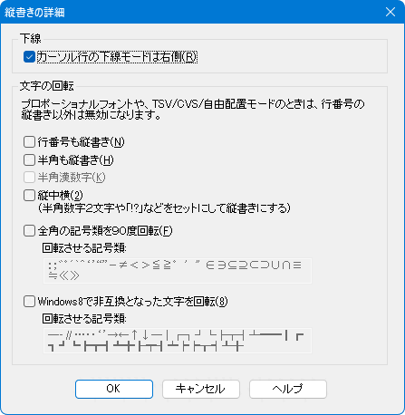

秀丸エディタ Ver.5.00以降では、「縦書き」ができます。
「縦書き」は、現状の設定を一時的に縦書きにする方法と、縦書き用の「ファイルタイプ別の設定」を作る方法があります。
縦書き用にフォント 行間 文字間等細かい箇所まで設定したい場合は、「ファイルタイプ別の設定」を作るのがいいでしょう。
「ファイルタイプ別の設定」は拡張子と関連付ける必要があります。全てのテキストファイルを縦書きにするなら、".txt" と「縦書き用設定」を関連付けすればいいのですが、そうでない場合は、縦書き用の拡張子を別途決めて関連付けしてください。
一時的に縦書きにする方法
メニューの「表示」から「縦書きモード」を選択すると、現状の「ファイルタイプ別の設定」で、「縦書き」を有効にした状態となります。
「縦書き」の設定は、「ファイルタイプ別の設定」で行います。

「体裁」-「詳細」の「縦書き」にチェックを入れると縦書きになり、「詳細」ボタンが有効になります。
「一時的な縦書き」になっている場合は、チェックの状態が通常と異なります。
この「一時的な縦書き」状態で「ファイルタイプ別の設定」を操作・保存しても、「縦書き」の状態は保存されません。 (「縦書き」以外の変更内容は保存されます)
ただし、「縦書き」を操作してしまうと「一時的な縦書き」状態が解除されてしまい、ON/OFF状態が保存されます。
「詳細」ボタンを押すと、ダイアログが表示され細かい設定も可能になっています。必要に応じて設定してください。通常、縦書きになるのは全角文字だけですが、半角文字も対象にしたり半角数字を漢数字に変換して表示できます。

全部OFF
☑行番号も縦書き
☑半角も縦書き
☑縦中横
☑半角も縦書き ☑半角漢数字
秀丸エディタから縦書きで印刷したい場合は、「秀丸パブリッシャー」が必要です。
「秀丸パブリッシャー」の詳細は、「第VI部〜秀丸エディタ拡張モジュール 秀丸パブリッシャー」を参照してください。
テンプレートの「本文BOX」-「縦書き」設定で、縦書きモードが「秀丸エディタと同じ」であれば、秀丸エディタ本体側の横書き・縦書きの状態が反映されます。
マクロを使えば、一時的な縦書きにしたり、拡張子に関連付けしなくても縦書き用の「ファイルタイプ別の設定」へ切り替える事ができます。
ファイルの先頭に縦書きであることを示す文字列がある場合、縦書き用の「ファイルタイプ別の設定」を設定します。
//縦書き用の設定名
$FileTypeName = "縦書き";
//縦書き識別用の文字列
$SearchString = "[tategaki]";
//テキストファイルか確認
if(filetype == ".txt"){
//取り込む文字数の設定
#len = 255;
//先頭行を取り込む
$CheckString = gettext(0, 0, #len, 0, 0, 0);
//識別用文字列があるか確認
//指定文字が含まれる場合
if(strstr($CheckString, $SearchString) > -1){
//設定を切り替える
configset $FileTypeName;
}
}
endmacro;ファイルが特定のフォルダ以下にある場合、縦書き用の「ファイルタイプ別の設定」を設定します。
//縦書き用の設定名
$FileTypeName = "縦書き";
//縦書き用のフォルダを指定する
$SearchString = @"C:\tategaki";
//テキストファイルか確認
if(filetype == ".txt"){
//ファイルに指定されたパスが含まれるかチェックする
if(strstr(directory, tolower($SearchString)) == 0){
//設定を切り替える
configset $FileTypeName;
}
}
endmacro;一時的な縦書きにする場合は、上記2つのマクロの一部を変更します。
修正前
//設定を切り替える
configset $FileTypeName;修正後
//一時的に縦書きへ変更する
#main = hidemaruhandle(0);
#WM_COMMAND = 0x0111;
#tategaki_switch = 341;
#n = sendmessage(#main, #WM_COMMAND, #tategaki_switch, 0);